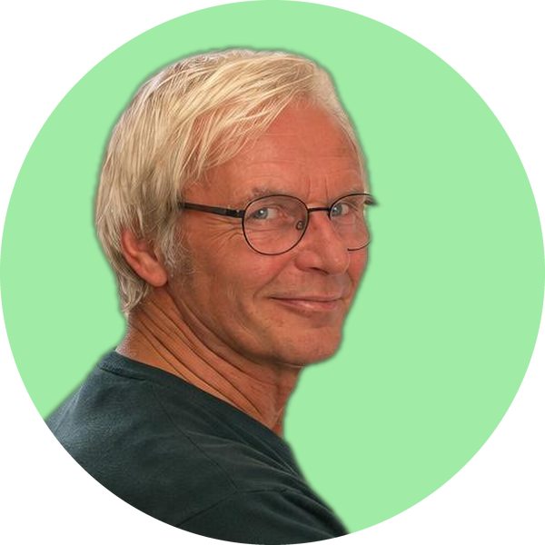

Een leven in beeld, met zorg samengesteld
Persoonlijke foto- en videopresentaties voor de afscheidsdienst.
Bij een afscheid wilt u het leven van een dierbare laten zien: de mooie momenten, de mensen, de herinneringen. Juist in die dagen is er vaak weinig tijd en rust om zelf foto’s te verzamelen en er iets moois van te maken.
Ik help daar graag bij. Persoonlijk, zorgvuldig en zonder dat het u veel moeite kost.
– Ton Worm, MooiGemaakt

Wat ik voor u kan maken
Fotopresentatie
Een rustige diavoorstelling van foto’s, met titels en passende muziek, voor tijdens de dienst.
Herinneringsvideo
Foto’s en filmpjes samengebracht in één film, om te tonen en daarna te bewaren en te delen.
Opgenomen woorden
Vindt u het lastig om tijdens de uitvaart zelf een tekst uit te spreken? Die kan van tevoren worden opgenomen en, voorzien van beelden, in de video worden verwerkt.
Fotocollage
Digitaal of afgedrukt, bijvoorbeeld voor in de condoleanceruimte of als aandenken.
Oude foto’s opknappen
Verkleurde of beschadigde foto’s zo goed mogelijk hersteld, zodat ze weer stralen.
Zo werkt het
-
U neemt contact op
Telefonisch, per WhatsApp of per mail. We bespreken kort wat u voor ogen heeft.
-
U levert de beelden aan
Foto’s en filmpjes, digitaal of op papier. Ik geef praktische tips over wat handig is.
-
Ik maak de presentatie
In overleg binnen enkele dagen, klaar voor het scherm in de aula. U kijkt vooraf mee.
Bescheiden kosten, vooraf duidelijk. MooiGemaakt is een kleinschalige, persoonlijke service. We spreken vooraf een vaste prijs af, zodat u weet waar u aan toe bent.
Neem gerust contact op
Ook als u eerst alleen wilt weten wat mogelijk is. Bellen of een WhatsApp-bericht is vaak het makkelijkst.
Voor uitvaartondernemers: u kunt deze informatie ook als flyer meegeven aan families. Download de flyer (pdf).
Wilt u ook alvast vastleggen wat uw nabestaanden later moeten weten? Kijk dan bij Handige hulp voor de achterblijvers.